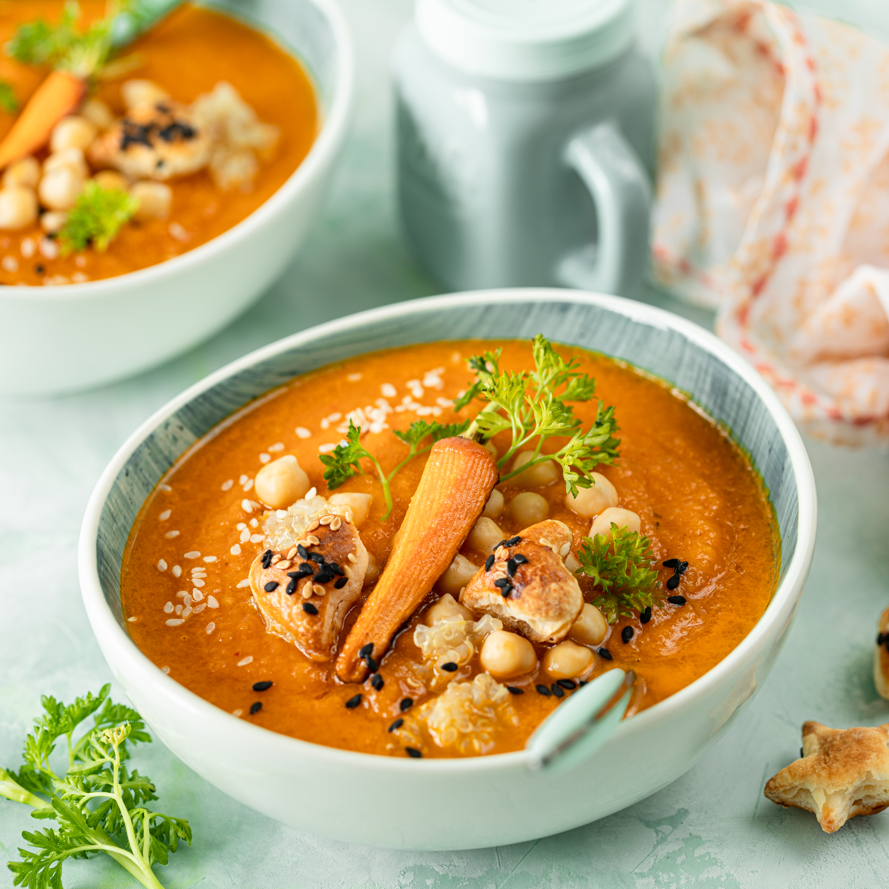

Back to Home
Shoyu Chicken

Creamy pumpkin soup is a rich, velvety dish that balances the natural,
mild sweetness of roasted or simmered pumpkin with savory aromatics
like garlic, onion, and broth. Finished with heavy cream or coconut milk,
it offers a silky, comforting texture with warm undertones of spices like nutmeg or ginger.
Ingredients
- Pumpkin: 1 medium sugar pie pumpkin (about 2 kg / 4 lbs) or 4 cups of canned pumpkin purée.
- Aromatics: 1 large yellow onion and 4-6 cloves of garlic, chopped
- Liquid Base: 4 cups of vegetable or chicken broth (stock).
- The "Cream": ½ cup of heavy cream, or full-fat coconut milk for a dairy-free/vegan option.
- Cooking Oil/Butter: 2-3 tablespoons of olive oil or butter for sautéing
- Seasoning: Salt and freshly ground black pepper, to taste.
Steps
- Prep Your Ingredients
- Sauté the Aromatics
- Simmer the Pumpkin
- Blend Until Smooth
- Stir in the "Cream" and Season
- Serve and Garnish